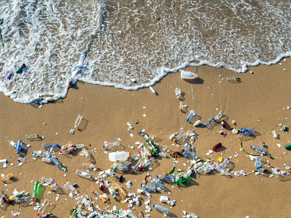

Sea Waste Effects
The different ways that sea waste is affecting the Earth is through the overall health of the ocean and the health of the millions of species that inhabit the ocean. Sea Waste also affects the saftey and quality of food that come from the ocean, this affects human health, as well as health of animals that live on land but depend on the ocean. Sea waste also is effecting the coastal tourism and the revenue is generates and finally, it is a major contributer to global warming.

Charities
There are multiple charities that are dedicated towards removing waste/plastic from the ocean, these charities include but isn't limited to, Marine Conservation Society which is trying to eliminate single use plastics, and enforce the mindset refuse, reduce, reuse and recycle. Surfers Against Sewage, who are campaigning for improved water quality against companies polluting the ocean with sewage. If you need more information, click on the More Info at the top of the Webpage.